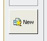
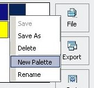

Create a blank palette
1. From the
My Palettes
tag page-

2. From your own palette tag page-

The new blank palette will be named "Untitled", and it will not be saved until you do the saving procedure.